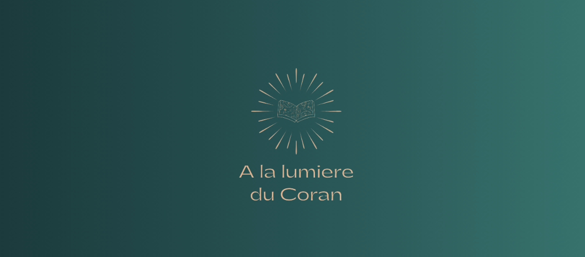

Apprendre l'arabe littéraire ne te permettra pas de comprendre le Coran sans traduction.
Si tu es devant moi, c'est que tu cherches à ce que les paroles d'Allah touchent enfin ton cœur.
Tu as sûrement déjà essayé d'apprendre l'arabe.
Peut-être avec des listes de vocabulaire, applications, vidéos YouTube ou des cours de groupe.
Mais tu as lâché, repoussé ou tu n'as pas avancé dans ta compréhension du Coran.
Tu t'es sûrement dit que t'étais nul en langue.
Que l'arabe était trop compliqué.
Que c'est un manque d'assiduité ou de motivation de ta part.
C'est un problème de méthode.
C'est juste qu'on ne t'apprend pas le bon arabe.
L'arabe littéraire que tu apprends et l'arabe du Coran, ce n'est pas la même chose.
Et c'est ce que personne ne t'explique.
Dans cette vidéo je vais te dévoiler cette méthode que la majorité des francophones ignore.
Une méthode créée par l'un des professeurs d'arabe les plus connus au monde.
Et qui a déjà aidé des milliers de musulmans à comprendre l'arabe du coran.
2000h
Video content
available
★★★★☆
Rated 4.5 across 25k members
Elle est en ce moment même en train de révolutionner l'apprentissage de l'arabe dans les pays anglophones.
Pourtant, tu n'en as jamais entendu parler.
Car je suis l'un des premiers à enseigner cette méthode dans les pays francophones.
Je vais aussi te montrer comment l'appliquer.
Pour que tu puisses comprendre tes premières sourates en 6 mois.
Et comprendre entièrement l'arabe du coran en 9 à 10 mois, même si tu pars de 0.
Sans apprendre de listes de vocabulaire ou de grammaire inutile pour comprendre le coran.
Et même avec ton emploi du temps chargé.
Voici Rachida, une ancienne élève qui est même devenue professeure dans notre institut.
Maintenant imagine toi...
Tu ouvres le Coran, tu le lis en arabe et tu comprends enfin le vrai message d'Allah.
Le prêche du vendredi a désormais véritablement un sens.
Tu ressens enfin les paroles d'Allah toucher ton cœur derrière l'imam.
Et tes ramadan ne sont plus les mêmes.
Tu vis pleinement ton Tarawih.
Maintenant pendant ta Omra, tu pourras profiter des pauses pour méditer le coran.
Et tu pourras même bénéficier des cours des savants.
Imagine la fierté de transmettre cet apprentissage à tes enfants.
Ils connaîtront l'arabe grâce à toi.
Pas avec des cours du dimanche ennuyeux et pas adaptés pour comprendre le coran.
Et tu sais que tu pourras toujours être là pour les aider et répondre à leurs questions.
Imagine la fierté dans les yeux de tes parents de voir leur enfant s'être rapproché d'Allah.
Imagine toi au jour du jugement, la joie et l'apaisement de rencontrer Allah en étant parmi les compagnons du coran.
Tu te projettes sûrement dans ce que je décris.
Parce qu'actuellement tu es frustré de dépendre d'une traduction.
Tu as cette barrière de la langue qui te bloque.
Peut-être que tes parents t'avaient inscrit à l'école arabe.
Mais si c'est le cas, à l'époque tu étais jeune, tu n'y accordais pas d'importance.
Maintenant tu as réussi ta vie professionnelle.
Peut-être même que tu as une vie de famille.
Mais tu t'es rendu compte qu'il te manquait quelque chose.
Tu as ressenti ce besoin de te rapprocher d'allah.
De comprendre son message.
Tu ressens cette obligation d'apprendre l'arabe.
Autour de toi tu vois sûrement des proches ou des personnes plus jeunes que toi qui apprennent.
Tu ne veux pas être cette personne à 60 ans qui ne sait toujours pas lire ou qui ne comprend pas le coran.
Parce qu'actuellement quand tu lis, quand tu récites, tu ne ressens rien.
Pourtant Allah nous dit
Traduction rapprochée du sens
Si Nous avions fait descendre ce Coran sur une montagne, tu l'aurais vu s'humilier et se fendre par crainte d'Allah.
لَوْ أَنزَلْنَا هَٰذَا الْقُرْآنَ عَلَىٰ جَبَلٍ لَّرَأَيْتَهُ خَاشِعًا مُّتَصَدِّعًا مِّنْ خَشْيَةِ اللَّهِ
Allah nous montre ici l'impact qu'est censé avoir le coran sur celui qui le comprend.
Mais actuellement, c'est loin d'être ce que tu ressens.
Peut-être que tu sais déjà lire l'arabe.
Mais lire sans comprendre, c'est comme avoir un guide pour réussir sa vie entre les mains, que tu ne pourras jamais appliquer.
Mais quel est l'intérêt si tu ne comprends pas réellement son message ?
Et ça des savants nous l'ont dit.
Comme cheikh Al Islam Ibn Taymiya qui nous a dit :
Traduction rapprochée du sens
« La langue arabe est l'essence même de l'Islam, et sa connaissance est une obligation. Car la compréhension du Coran et de la Sounna est obligatoire, et elle n'est possible qu'en comprenant la langue arabe.… »
وأيضا فإن نفس اللغة العربية من الدين ، ومعرفتها فرض واجب، فإن فهم الكتاب والسنة فرض، ولا يفهم إلا بفهم اللغة العربية
Tu sais que le Coran sera un témoin pour ou contre toi au Jour du Jugement.
Mais pour qu'il soit pour toi, il faut l'appliquer.
Et pour l'appliquer, il faut le comprendre.
Peut-être que tu as déjà ressenti cette peur…
La peur de te tromper quand tu récites.
La peur de faire des erreurs dans ta religion.
De mal comprendre ce qu'Allah attend de toi.
D'être ignorant ou d'avoir des baisses de foi
Et c'est la même chose chaque année pendant le Ramadan, lors des prières de Tarawih.
L'imam récite, et autour de toi tu vois des personnes touchées, certains pleurent, le cœur bouleversé par ce qu'ils entendent.
Mais toi, comme la majorité des gens, tu ne comprends pas.
Ton esprit s'évade, tu repenses à ce que tu as mangé, tu regardes le tapis.
Bref. Tu n'es pas concentré.
Et à la fin de chaque ramadan tu en ressors frustré, de ne pas avoir pu lire ou comprendre le coran.
Et tu ressens que ta pratique n'est peut-être pas aussi profonde qu'elle devrait l'être.
À chaque fois, tu te dis "ça y est, cette année j'apprends l'arabe"
Mais à chaque fois la situation se répète.
Pourtant tu es sincère, engagé dans ta foi.
Peut-être que tu lis régulièrement le Coran,
Que tu aimerais faire la hijra.
Peut-être même que tu as déjà fait la Omra.
Et que c'est là-bas, que tu as ressenti ce manque de ne pas comprendre l'arabe.
Moi c'est Thomas, et j'ai vécu les mêmes frustrations que toi.
Musulman converti, j'ai grandi dans une famille chrétienne.
Personne ne parlait arabe autour de moi. Je partais de 0.
Après ma conversion, j'étais un musulman "lambda".
Mais tout a changé lors de mes études au Canada, avec une vidéo de Nouman Ali Khan.
L'un des professeurs d'arabe les plus influents au monde.
Il disait que l'arabe du coran était la clé pour découvrir les trésors de notre religion
Moi aussi je voulais cette clé.
Alors j'ai cherché des méthodes pour apprendre l'arabe.
Mais comme toi, aucune de ces méthodes ne m'a permis d'accéder aux vraies paroles de notre créateur.
Je me suis donc inscrit à son institut.
Et c'est là que tout a changé pour moi.
J'ai fait une découverte qui a changé ma relation avec Allah à tout jamais.
J'avais enfin atteint la compréhension du coran, grâce à une méthode dont je n'avais jamais entendu parler avant.
Après avoir découvert le vrai sens du coran, et ce que les traductions ne transmettent pas.
Je me suis dit : "C'est ça que je veux faire".
Je veux que les gens puissent ressentir la même chose que moi.
Parce que quand je regardais les méthodes utilisées chez nous.
Je ne trouvais pas ce que j'avais appris.
Aucune méthode n'était aussi efficace pour comprendre l'arabe du coran.
Cette méthode fonctionnait pour des milliers d'anglophones.
Alors, j'ai adapté cette méthode pour les francophones.
Et j'ai créé mon institut :
À la Lumière du Coran

Où j'aide des personnes comme toi, à comprendre l'arabe du Coran en 9 à 10 mois.
Comme Aboubacar par exemple
Ou encore Vivien, Samba, Nicolas et plein d'autres...
Ces personnes n'étaient pas meilleures que toi.
La seule différence ? C'est la méthode qu'ils ont utilisée.
Les cours de groupes à la mosquée, les applications, les listes de vocabulaire ou même certaines méthodes que tu vois en ligne.
La plupart de ces méthodes font la même erreur :
Elles t'apprennent l'arabe littéraire.
Pour quelqu'un qui souhaite apprendre des phrases de touristes pour aller voyager au Caire, c'est bien.
Mais pour quelqu'un comme toi qui ressent le besoin de comprendre l'arabe du Coran, c'est là que c'est problématique.
Souvent, on pense qu'il n'y a que deux types d'arabe.
Le Darija, ou plutôt les dialectes, comme on retrouve au Maroc, en Algérie…
Et l'arabe littéraire, l'arabe officiel des journaux, des politiques etc…
Et on pense que c'est en apprenant l'arabe littéraire qu'on va pouvoir comprendre entièrement les paroles d'Allah.
Et c'est bien ça le problème.
Le Coran a été révélé il y a plus de 1400 ans, en arabe.
Mais comme toutes les langues vivantes, l'arabe a évolué au fil des siècles.
Imagine toi dire à un homme du Moyen-Âge une phrase comme "Mec, je suis trop chaud au foot."
Il ne comprendrait absolument rien.
Mec ? Foot ? T'es chaud ? Il pensera à la chaleur, lui.
Pourtant, c'est du français.
La langue est la même, mais les expressions et la façon de parler ont changé.
Exactement pareil avec l'arabe.
L'arabe du Coran, qu'on appelle l'arabe coranique, est resté intact.
Mais l'arabe d'aujourd'hui, l'arabe littéraire, lui a évolué, et s'est simplifié.
Et c'est pour ça qu'apprendre l'Arabe littéraire ne te permettra pas de comprendre le Coran.
Ce cercle, ça représente l'arabe coranique.
À l'intérieur de ce grand cercle, il y a un plus petit cercle : c'est l'Arabe littéraire, une version simplifiée.
Arabe coranique
Arabe littéraire
L'arabe coranique englobe l'arabe littéraire.
Il est plus riche, plus complet.
Donc si tu apprends l'arabe coranique, tu comprends directement le Coran en entier.
En revanche, si tu apprends l'arabe littéraire en premier, comprendre le Coran reste un problème.
Car tu auras principalement appris des mots, des phrases de la vie de tous les jours.
Et tu ne comprendras pas certains passages importants.
Par exemple dans la sourate 5, verset 116, il y a une phrase qui dit :
Traduction rapprochée du sens
Si je l'avais dit il y a longtemps, tu l'aurais su.
إِنْ كُنْتُ قُلْتُهُ فَقَدْ عَلِمْتَهُ
Dans cette phrase il y a une expression qui veut dire "il y a longtemps".
Mais cette expression n'est plus utilisée de nos jours.
Et tu ne peux pas l'apprendre avec l'arabe littéraire.
En arabe moderne, ce mot veut dire voiture.
Imagine toi avoir appris l'arabe littéraire et lire ce verset qui te parle de voiture en plein désert il y a 1400 ans.
Évidemment, ça n'a aucun sens.
En arabe coranique, سيارة désigne un groupe de voyageurs.
C'est le sens original du mot, celui du temps de la révélation.
Et ce genre d'exemple, il en existe plein dans le coran.
Et chacun peut complètement changer le sens de ce que tu lis.
Donc comment tu fais pour comprendre le coran maintenant ?
Et ça beaucoup de personnes s'en rendent compte seulement après plusieurs années d'études de l'arabe.
Elles ont toujours du mal à comprendre le coran.
La méthode Baynah fait de la compréhension de l'arabe du coran une priorité.
Et si tu veux compléter ton apprentissage avec de l'arabe littéraire, c'est plus simple.
Tu as directement des bases solides, car les deux partagent les mêmes racines.
Tu as juste à apprendre un peu de vocabulaire moderne.
Et avec un peu de pratique, les conversations viendront naturellement
Mais si tu apprends avec l'arabe littéraire en premier, tu auras appris à l'envers, en commençant par la fin.
C'est comme si tu voulais construire une maison, et qu'au lieu de commencer par les fondations, tu voulais commencer par le toit.
Mais malheureusement presque personne chez nous n'enseigne l'arabe de cette façon.
Car peu de personnes ont eu la chance d'accéder à cette méthode.
J'ai dû prendre la méthode que j'avais apprise avec Nouman Ali Khan et l'adapter en français.
En regardant cette vidéo, tu fais partie des premiers francophones à y avoir accès.
Cette méthode a déjà été utilisée par plus de 500 000 anglophones depuis 20 ans.
Et elle commence tout juste à arriver chez nous.
D'ailleurs tu te dis peut-être :
"C'est super mais si apprendre l'arabe coranique est plus riche, plus ancien, ça veut dire que c'est plus compliqué, et j'ai pas envie d'y passer des années."
Mais il ne faut pas confondre une langue riche et une langue compliquée.
L'arabe est une langue riche mais profondément structurée, logique et imagée.
Allah nous dit — Sourate Az-Zukhruf, verset 3 :
Traduction rapprochée du sens
Nous en avons fait un Coran en arabe afin que vous compreniez.
إِنَّا جَعَلْنَاهُ قُرْآنًا عَرَبِيًّا لَّعَلَّكُمْ تَعْقِلُونَ
Sourate Al-Qamar :
Traduction rapprochée du sens
Certes nous avons rendu facile pour celui qui cherche à se rappeler, y a-t-il quelqu'un pour faire l'effort de se rappeler
وَلَقَدْ يَسَّرْنَا الْقُرْآنَ لِلذِّكْرِ فَهَلْ مِن مُّدَّكِرٍ
Allah nous dit qu'il a facilité la compréhension du coran en arabe pour ceux qui cherchent à le comprendre.
Ce n'est pas l'arabe qui est compliqué.
C'est la méthode qu'on t'a donnée pour l'apprendre qui l'est.
Car lorsque tu apprends l'arabe coranique tu ne pars pas de zéro.
Tu reconnais ce que tu lis et récites régulièrement.
Et l'apprentissage est donc beaucoup plus simple.
Laisse moi te dire le plus surprenant.
J'ai passé un an en Égypte pour compléter mon savoir sur l'arabe.
Le pays réputé pour cet apprentissage.
Mais au final les méthodes utilisées là-bas étaient moins adaptées et plus compliquées que celle que j'avais apprise.
En un an je n'ai quasiment rien appris de nouveau sur le coran.
Au final, je me retrouvais plus à expliquer l'arabe à mes camarades francophones qu'à apprendre de nouvelles choses.
Toutes ces méthodes que tu connais sûrement…
La méthode de Médine, les méthodes égyptiennes.
Toutes ces méthodes qui utilisent l'arabe littéraire.
Elles n'ont pas été conçues pour comprendre l'arabe du Coran en priorité.
Et c'est un vrai problème.
Pourtant, on continue toujours de t'enseigner avec ces méthodes hors sujet.
Et c'est pour ça que la méthode Baynah a été créée.
Environ 95% de ce que tu apprends avec cette méthode vient directement du coran.
Tu apprends en immersion dans le Coran avec des mots, des phrases que tu lis ou récites tous les jours.
Et c'est pour ça qu'elle te permettra un apprentissage aussi rapide.
Le Prophète ﷺ a dit :
Traduction rapprochée du sens
« Celui qui lit une lettre du Livre d'Allah a pour cela une bonne action, et la bonne action est multipliée par dix. »
مَنْ قَرَأَ حَرْفًا مِنْ كِتَابِ اللَّهِ فَلَهُ بِهِ حَسَنَةٌ، وَالْحَسَنَةُ بِعَشْرِ أَمْثَالِهَا
Imagine alors quand tu ne fais pas que prononcer ces lettres, mais que tu les comprends enfin.
Chaque verset compris est une baraka immense qui entre dans ta vie.
La méthode Baynah, te permettra de lire et comprendre l'arabe du coran en 10 mois, ou même 9 si tu sais déjà lire l'arabe.
Pour t'amener à ce résultat, la méthode se repose sur 3 piliers.
Premièrement c'est l'apprentissage structuré :
Lorsque tu rejoins l'institut tu auras un accès à vie à une plateforme avec des vidéos et des manuels qui te guident dans ton apprentissage.
Des vidéos et exercices courts.
Adaptés à ton emploi du temps.
Qui te permettront une pratique régulière.
Le deuxième pilier, c'est les cours individuels.
Tu as la possibilité de réserver un cours lorsque tu souhaites, avec ton professeur attitré, directement en visio.
On corrige ensemble, on débloque tes difficultés, et on t'accompagne vraiment à ton rythme.
Le troisième pilier, c'est la connexion directe quotidienne
Tu as accès à notre Whatsapp.
On prend régulièrement de tes nouvelles, et tu peux nous poser toutes les questions que tu veux.
L'objectif, c'est que tu sois soutenu jusqu'au bout pour que tu ne sois jamais bloqué.
C'est comme si tu avais un professeur dans ta poche 7j/7 qui te soutient et qui t'accompagne de A à Z dans ton apprentissage.
C'est ce qui nous permet aujourd'hui d'avoir une méthode anti-décrochage.
Et pour que tout le monde s'y sente à l'aise, l'institut compte des professeurs hommes et femmes.
Tu n'entres pas dans l'institut pour être livré à toi-même.
Nous avons développé cette méthode pour qu'elle s'adapte à ton niveau, tes difficultés et ton emploi du temps.
Pour que tu en ressortes en ayant totalement transformé ta relation avec le Coran
Donc si tu cherches encore un abonnement à 10 euros par mois, ce n'est pas pour toi.
Tu as sûrement choisi d'utiliser des méthodes plus ou moins économiques.
Et au final, regarde ce qu'elles t'ont coûté.
Des jours, des mois, des années d'opportunité où tu pouvais te rapprocher d'Allah.
Mais tu as peut-être déjà investi du temps ou de l'argent dans des méthodes qui n'ont rien donné.
Et tu as peur que ce soit encore le cas.
C'est pourquoi nous avons mis en place une garantie sous contrat.
Si après avoir suivi notre programme, tu n'as toujours pas atteint cette compréhension du Coran...
Nous continuons de t'accompagner gratuitement, jusqu'à ce que l'objectif soit atteint.
Article 3 – Engagement pédagogique et garantie d'accompagnement
Le Prestataire s'engage à accompagner le Client jusqu'à l'atteinte de son objectif de compréhension du Coran, sous réserve du respect des engagements du Client.
Si, à l'issue des 9 mois indicatifs, le Client n'a pas atteint une compréhension satisfaisante, le Prestataire poursuivra l'accompagnement sans frais supplémentaires.
Nous sommes le premier et le seul institut francophone à proposer cet accompagnement premium.
Maintenant que tu n'as plus aucune excuse pour accomplir ce projet, c'est à toi de choisir.
Tu peux fermer cette page en te disant que tu verras ça plus tard.
En te disant "je ferai ça quand j'aurai le temps", "quand ce sera le bon moment".
Pour au final rester dans la même situation pendant encore des années.
Parce qu'au final le "bon moment" n'existe pas.
Car chaque jour qui passe est une opportunité perdue de te rapprocher d'Allah.
Allah nous dit
Traduction rapprochée du sens
Avant que la mort ne vous surprenne, l'un de vous dira : "Mon Seigneur, pourquoi ne m'as-Tu pas accordé un peu plus de temps ? J'aurais fait le bien, j'aurais été parmi les vertueux."
وَأَنفِقُوا مِن مَّا رَزَقْنَاكُم مِّن قَبْلِ أَن يَأْتِيَ أَحَدَكُمُ الْمَوْتُ فَيَقُولَ رَبِّ لَوْلَا أَخَّرْتَنِي إِلَىٰ أَجَلٍ قَرِيبٍ فَأَصَّدَّقَ وَأَكُن مِّنَ الصَّالِحِينَ
Alors tu peux transformer ta relation avec Allah une fois pour toutes grâce à cette méthode.
Je ne cherche pas à remplir des classes de 30 élèves.
Nous accompagnons nos élèves individuellement.
Nous sélectionnons uniquement des personnes dont le besoin est de se rapprocher d'Allah à travers l'arabe du coran dès aujourd'hui.
Le seul moyen de savoir si on peut t'accompagner, c'est d'avoir un échange avec toi.
Il y a un bouton qui vient d'apparaître sous cette vidéo.
Tu as juste à cliquer dessus pour déposer ta candidature.
Tu auras un appel offert, avec moi-même ou un membre de l'institut.
On prendra quelques minutes rien que pour toi, pour parler de ta situation, de tes objectifs.
Et si on voit que tu es sincère et motivé alors on t'ouvrira les portes de l'institut.
Dans tous les cas tu ne ressortiras pas les mains vides de cet appel
Si on voit que l'Institut n'est pas faite pour toi, tu recevras une formation de cinq jours qui te permettra de comprendre ton premier verset en arabe.
Et ça, c'est 100 % offert.
Mais comme tu l'as compris, nous ne pouvons pas accueillir tout le monde.
Cela reste en fonction des places disponibles au sein de l'institut.
|
DIM. |
LUN. |
MAR. |
MER. |
JEU. |
VEN. |
SAM. |
| 08:00 |
Cours Thomas
08:00 |
|
Candidature
08:30 |
|
Abdoul-Bastoi
08:30 |
Samba et Thomas
08:00 |
|
| 09:00 |
Samba et Thomas
09:00 |
|
Cours fatmata
09:30 |
|
Cours fatmata
09:30 |
Youssef Kacimi
09:00 |
Moment famille
07:30 |
| 10:00 |
Nicolas
10:00 |
Candidature
10:30 |
|
Candidature
10:00 |
Création contenu
10:30 |
Ferielle Habili
10:00 |
|
| 11:00 |
Cours 7b
10:45 |
MAJID Outman
11:30 |
|
Outman et Thomas
11:30 |
Kaou Ham
11:45 |
|
|
| 12:00 |
Cours 6b
12:00 |
|
Candidature
12:00 |
|
|
Jummah
12:05 |
|
| 14:00 |
|
Candidature
13:45 |
Cours pathe
14:00 |
Othman Abdelkader
13:45 |
Cours pathe
14:00 |
|
Moustapha DIAGO
14:00 |
| 15:00 |
Cours outouchent
14:30 |
Cours simina
14:45 |
Belkacem
15:00 |
Teddy Jacquemain
15:15 |
simina
15:00 |
Entretien prof
15:00 |
|
| 17:00 |
Cours niveau 3-4
16:30 |
raphael maison
17:00 |
Candidature
17:00 |
Nicolas
16:45 |
|
Moustapha DIAGO
17:00 |
famille
17:30 |
| 19:00 |
Ramadan
19:00 |
Ramadan
19:00 |
Ramadan
19:00 |
Ramadan
19:00 |
Ramadan
19:00 |
Ramadan
19:00 |
Ramadan
19:00 |
Si tu vois qu'il reste des créneaux disponibles sur le calendrier d'appel, ne perds pas cette opportunité de transformer ta relation avec Allah
Alors clique sur le bouton en dessous pour déposer ta candidature.
↓
Et ça sera peut-être ton premier pas vers ta compréhension du Coran.
Tu le sauras lors de ton appel.
Nous n'en parlons jamais avant, pour une raison très simple :
je ne veux pas faire entrer quelqu'un que je ne peux pas aider à 100 %.
Qui n'a pas les bons objectifs
Ou qui n'est pas prêt à investir au moins 2h par semaine à son apprentissage.
Mais si tu veux avoir une idée, pose toi simplement cette question :
Si tu trouvais une clé qui te permettait chaque jour d'avoir le cœur apaisé en comprenant la Parole d'Allah ?
Une clé qui te permettrait de devenir le modèle de ta famille, de transmettre cet apprentissage à tes enfants et de ne plus jamais te sentir spectateur pendant la prière ?
Combien vaudrait cette clé pour toi ?
Combien serais-tu prêt à investir pour transformer radicalement ta relation avec Allah, pour le restant de tes jours et pour ton au-delà ?
La méthode Baynah, c'est cette clé.
C'est ce qui va littéralement changer ta vie, ton foyer et ta sérénité intérieure sur tous les aspects.
L'institut a bien évidemment un coût.
Une transformation de cette ampleur n'est pas gratuite, mais rassure-toi, on est bien loin de ce que certains payent pour aller apprendre l'arabe en Égypte.
Et surtout bien moins cher que le regret de passer sa vie sans avoir jamais compris une seule sourate par soi-même.
Alors si tu veux éviter de repousser ton apprentissage une nouvelle fois, je te laisse déposer ta candidature.
Et si tu corresponds au profil qu'on recherche au sein de l'institut, tu pourras commencer ton apprentissage dans les prochains jours.